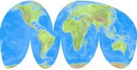

概述¶
UV 映射是把二维贴图映射到三维物体最灵活的方法。在此过程中，将三维 (X, Y & Z) 网格展开为二维 (X & Y ... 或者也叫做, "U & V") 图像。图像中的色彩就这样映射到网格上，显示为网格表面的色彩。使用UV贴图可以做出程序化材质和贴图无法做到的真实感，可以做出比顶点绘制更好的细节。
UV的解释¶
要理解UV映射，最好的类比是裁开纸板箱。箱子是一个三维(3D)物体，就好比场景里的立方体网格。
拿一把剪子沿折线裁开盒子，就可以把它平铺到桌面。俯视桌子上的盒子，把左右方向称之为U，上下方向称之为V。图像就这样变成了二维(2D)。我们用U和V来代替常规的X和Y指代“纹理空间坐标”，后者通常(和Z一起)用来表示三维空间(3D)。
重组盒子之后，UV坐标转换为盒子上的 (X, Y, Z) 坐标。计算机做的其实就是把一张二维图像包裹到一个3D物体表面。
被检查的盒子。 |
平摊开的盒子。 |
在UV展开过程中，需要在UV/图像编辑器中准确告诉Blender如何将物体的表面映射到一张平摊的二维图像。这一步你可以放手施为(继续上面的类比，想象一下，把展开的盒子放在桌面，裁成小块，拉伸和/或压缩这些小块，然后就像在桌面上一样已某种方式在图像中进行排列)。
制图学范例¶
制图者(地图制作人员)和这个问题打了上千年交道。一个制图学(地图制作)的例子是做一张全世界的投影地图。在制图学里，我们参考地球(一个球体)表面，然后制作出一张可以折叠到航天飞机仪表盘柜子里的地图。我们用下面几种方法 填充 朝向两极的空间，或者改变地图轮廓：

墨卡托投影。 |

摩尔威德投影。 |

Albers等距投影。 |
{kind=link}
上面都是球面UV映射方法。上百种常用的投影方法都有其优点和缺点。在计算机中，Blender允许使用我们希望的任意方法。
在更加复杂的模型里(就像上面的全球地图)引出了一个问题，哪些面不能裁开，但为了摊开而被拉伸。这有助于更简单的UV映射，不过会增加最终映射贴图的变形。(在一张摊开的地图上，靠近两极的国家或州看起来比靠近赤道的小一些。)
半球范例¶

3D空间 (XYZ) 与UV空间对照 (单击放大)。
在上图中，3D空间和UV空间中的标记面形状和大小不一样。
这种差异是3D物件(XYZ)转换为2D平面(UV映射)的"拉伸"(技术上称之为映射)导致的。
如果一个三维物体存在UV映射，那么物体上的每一个点的三维坐标都有其对应的UV坐标。(上图中的 P 展示了如何将三维物体上的点映射到二维图像。)
UV的优势¶
尽管程序纹理 (前面的章节有介绍)很有用—没有重复而且总是 "适应" 3D物体—但对于更加复杂或者自然的物体就有些够用了。例如，使用程序生成头部的皱纹就无法获得准确的结果。人体头部的皱纹，或者汽车上的划痕并非出现在随机位置，而是取决于模型的形状和用途。手动绘制的图像，或者从真实世界捕捉的图像可以带来更多的可控性和真实感。对于细节如书籍封面、挂毯、地毯、污渍和细节道具，艺术家可以通过UV贴图控制物体表面的每一个像素。
UV映射描述了贴图的哪一部分关联到模型的哪个多边形。多边形的每一个顶点都被指定对应一个二维坐标，后者定义了图像的哪一部分被映射至物体。这些二维坐标被称为UV(与三维中的XYZ形成对比)。生成UV映射的操作也称之为 "展开" ，因其就像把网格展开到一个二维平面上。
对于大多数简单的三维模型，Blender提供了简单的自动展开算法。对于更加复杂的三维模型，常规的立方体、柱体或球体映射通常是不够用的。为了获得均匀和精确的投影，可以使用缝合线引导UV映射。这可以用于给任意并且复杂的形状(比如人体头部或者动物)应用贴图。通常这些贴图是使用GIMP、Photoshop或者其他用户喜爱的绘图软件绘制的图像。